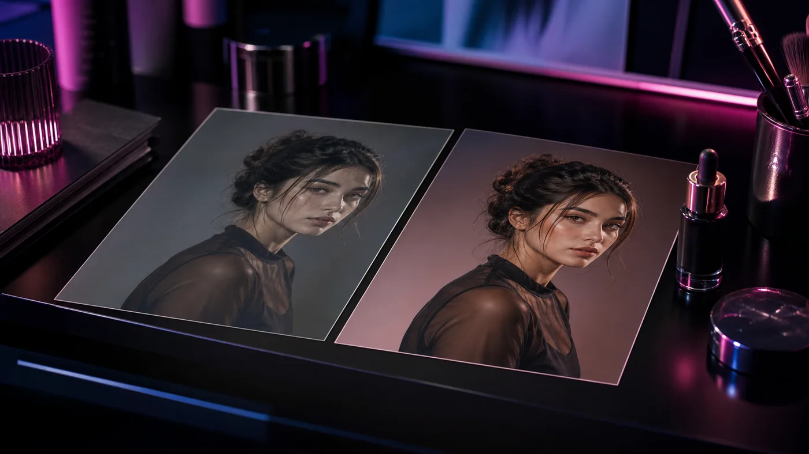

AI-студия для контента
Создайте картинку, видео или музыку без лишней возни
Выберите задачу, загрузите референс при необходимости и сразу переходите к созданию. Без перегруза настройками на входе.
Картинки
Видео
Музыка
Сценарии
Открыть Studio
Выберите задачу, а не настройки
01 · GPT Image 2
Картинка с нуля
Для обложек, рекламных кадров, постов, товаров и визуальных идей.
02 · Nano Banana Pro
Фото по примеру
Сохранить героя, товар или настроение и собрать новый кадр.

03 · Seedream Edit
Улучшить фото
Поменять фон, свет, стиль, убрать визуальный шум и довести кадр.
04 · Kling 3.0
Сделать видео
Оживить фото или описать сцену с движением камеры.
05 · Suno
Сделать музыку
Фон, трек для ролика, джингл или атмосферная зарисовка.
Модели
Не знаете, что выбрать?
Откройте карточку модели: там коротко объяснено, когда она подходит, какие промпты писать и как запустить тест.
Смотреть все модели